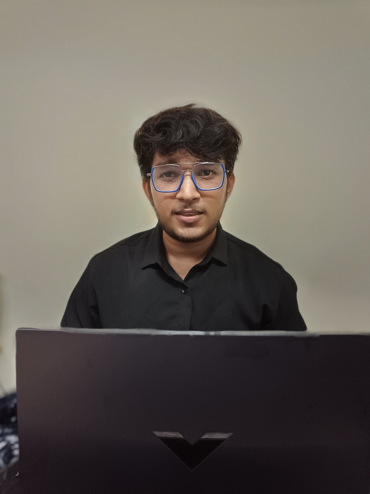
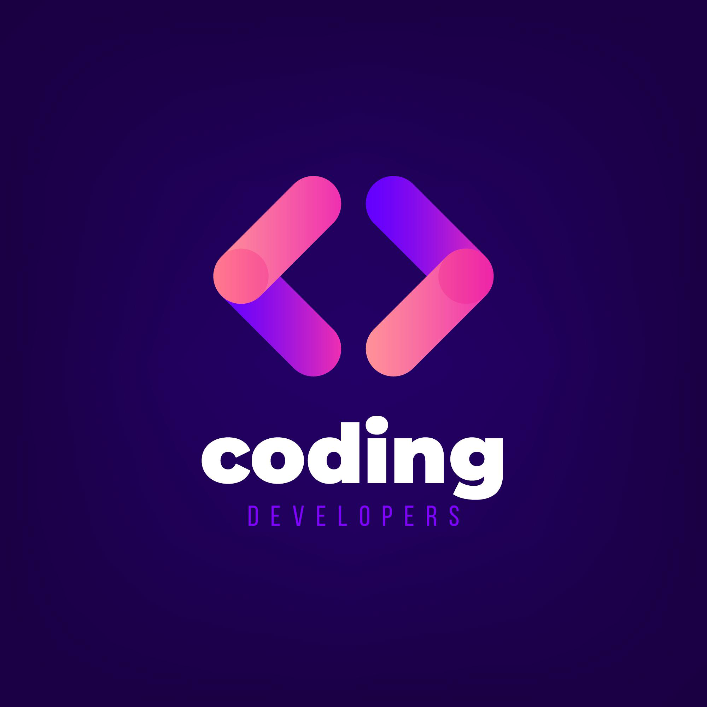

Hi my name is Tushar
and I am a passionate

Previous Knowledge
Studied C and C++
Started C and C++ for fun before coming to college but started enjoying it.Learnt the languages,their STL and solved some basic problems.

Studied DSA
After diving into coding world people suggested to start studying DSA as big MNCs ask questions on that and it involves problem solving. So i started it and learnt till Binary Search and solved some basic array questions.

Started HTML and CSS
After reaching SRM i realized that most of the prominent clubs were hiring in the web development domain and i really wanted to be part of such a community so I paused DSA for sometime and then did some basic HTML and CSS.
Made Portfolio Project
Started this project for NSCC and then learnt a lot of new stuff while preparing this project.
Campus Quest 3.0
Participated in Coding Ninjas Campus Quest 3.0 and reached till round 2.It was a major learning opportunity for me.